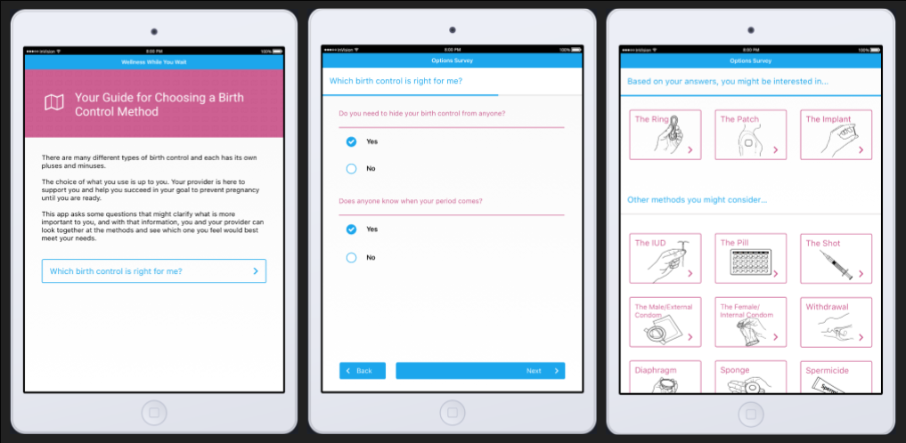

Elizabeth Stowell
Contraception Decision Aid
-
<--Back to Projects
-
During Summer 2016, I worked with local health center to develop a prototype of a contraception decision aid.
Tool Description: The prototype was designed to help patients explore their contraceptive options and to assist them in making an informed decision about their sexual and reproductive health. While waiting for an appointment with a health care provider, a patient can use the tool privately to learn about contraceptive methods and to prepare questions they may have for the health care provider. The content of the prototype was developed in collaboration with health care providers at a local health center. This health center is a part of a larger children's hospital, and therefore serves a youth population.
 -
Background: With the invention of the female hormonal birth control pill and the modern IUD in the 1960s, the United States experienced a sexual revolution that changed attitudes toward both contraception and sexuality [3]. This relatively recent access to birth control has benefitted women* greatly through the ability to decide if and when to have children and how many children to have. As women’s control over their reproductive lives increased, and as female contraceptive options expanded, the responsibility for “safe sex” shifted onto women. The invention of effective female birth control methods resulted in men needing to play a less active role in avoiding unwanted pregnancy, and as a result, in men assuming less responsibility for contraceptive use [2, 7].
Today, two main male contraceptive options exist: vasectomy, which is often irreversible, and condoms, frequently seen as a hindrance and unromantic [1, 4]. In contrast, multiple new female methods of contraception have entered the market just in the past few years [5]. The most commonly used methods of contraception used in the US are the following:
- Female pill (25%)
- Female sterilization (22%)
- Male condom (14.6%)
- Male Sterilization (6.5%)
- All other methods, most of which are female forms of contraception (31.5%) [5].
This means that women disproportionately carry both the burden of avoiding pregnancy and the health risks associated with contraceptive use. Side effects from female birth control methods vary in severity and can be enough to deter women from their use. In a 2010 study, Mosher & Jones found that 30% of women on the pill, 43% of women on hormonal injections, and 50% of women on the contraceptive patch discontinued use due to side effects, concerns about side effects, or adverse changes in the menstrual cycle [8].
While there is a clear a need for the development of alternative and effective forms of male contraception, efforts to develop male (hormonal) contraceptive methods have historically lacked the necessary support from key organizations such as the World Health Organization and pharmaceutical companies.
-
References:
1. Alvarez, M., & Garcia-Marques, L. (2011). Cognitive and Contextual Variables in Sexual Partner and Relationship Perception. Archives Of Sexual Behavior, 40(2), 407-417. doi:10.1007/s10508-011-9725-5.
2. Balswick, J. O. (1972). Attitudes of Lower Class Males Toward Taking a Male Birth Control Pill. Family Coordinator, 21(2), 195-199.
3. Fennell, J. (2011). Men Bring Condoms, Women Take Pills: Men’s and Women’s Roles in Contraceptive Decision Making. Gender & Society, 25(4), 496-521.
4. Higgins, J. A., & Hirsch, J. S. (2008). Pleasure, Power, and Inequality: Incorporating Sexuality Into Research on Contraceptive Use. American Journal Of Public Health, 98(10), 1803-1813.
5. Kavanaugh, M. L., & Jerman, J. (2018). Contraceptive method use in the United States: trends and characteristics between 2008, 2012 and 2014. Contraception, 97(1), 14-21.
6. Klaas, H., Farid., Martin, W., Steven, W., & Lothar, H. (2005). Attitudes toward male fertility control: results of a multinational survey on four continents. Human Reproduction, 20(2), 549-556.
7. Marsiglio, W., & Menaghan, E. G. (1987). Couples and the Male Birth Control Pill: A Future Alternative in Contraceptive Selection. Journal Of Sex Research, 23(1), 34.
8. Mosher WD, Jones J. Use of Contraception in the United States, 1982–2008. National Center for Health Statistics. National Vital Health Stat. 2010;23(29).